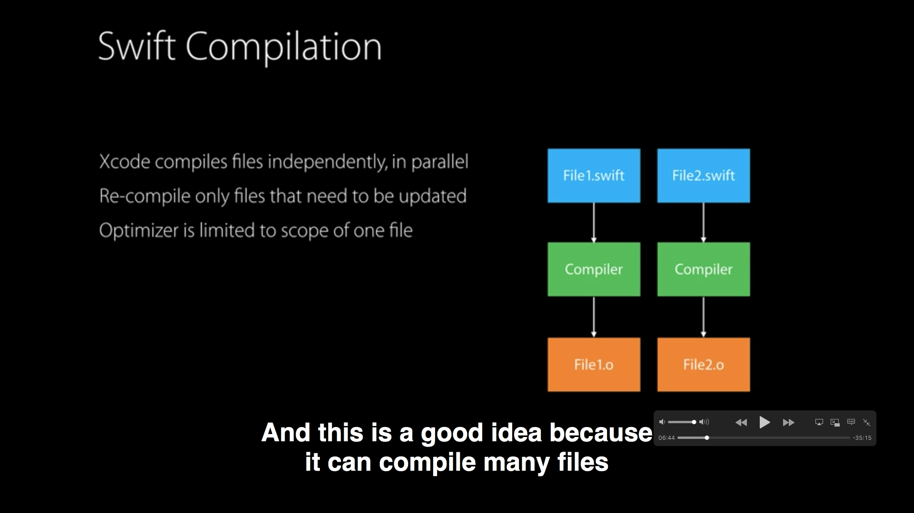
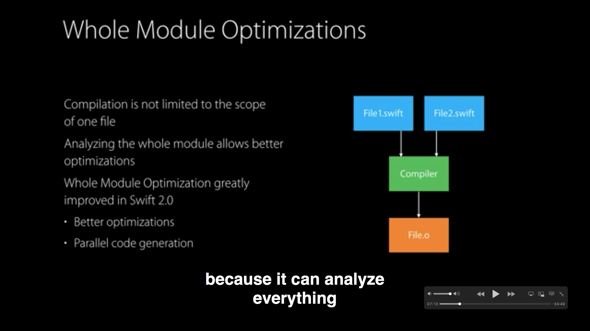
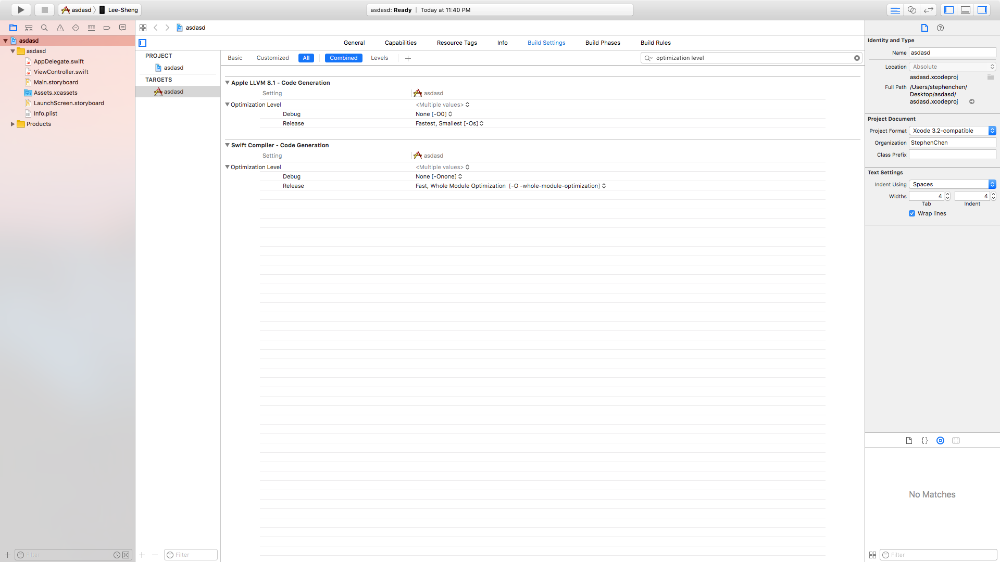

Swift Optimization Level
Oct 10, 2017
什麼是 Optimization Level ? 其實跟在 Xcode 是如何 compile files 有關係。
在 Xcode 裡面分成三種方式
1. None
就是 None …..
2. Single-File Optimization
Xcode 會把每一個 file 各別 compile，當下一次有需要也只會 compile 有更動過的檔案，但問題在於 scope 只侷限在同一個 file
來看 WWDC 的截圖

3. Whole Module Optimization
Xcode 7 出現之後才有的，原理是 compiler 會一次把你所有的檔案一起 compile
所以 compile 所花的時間會比較長，但是產生出來的 binaries 會 run 的比較快 (大神的測試)
在來看 WWDC 的截圖

所以了解以上這三種 compile 的區別之後，就可以更深一層的去了解，當你在 Xcode 7 以上所開新的專案都會預設在 debug mode 下使用 None，release mode 下使用 Whole Module Optimization

以上提供非常表面的分析，其實 Swift 官方文檔 提供了更多的 Optimization Tips。恩！夜深了，我就先睡了拉：）